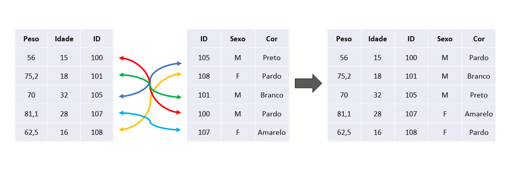
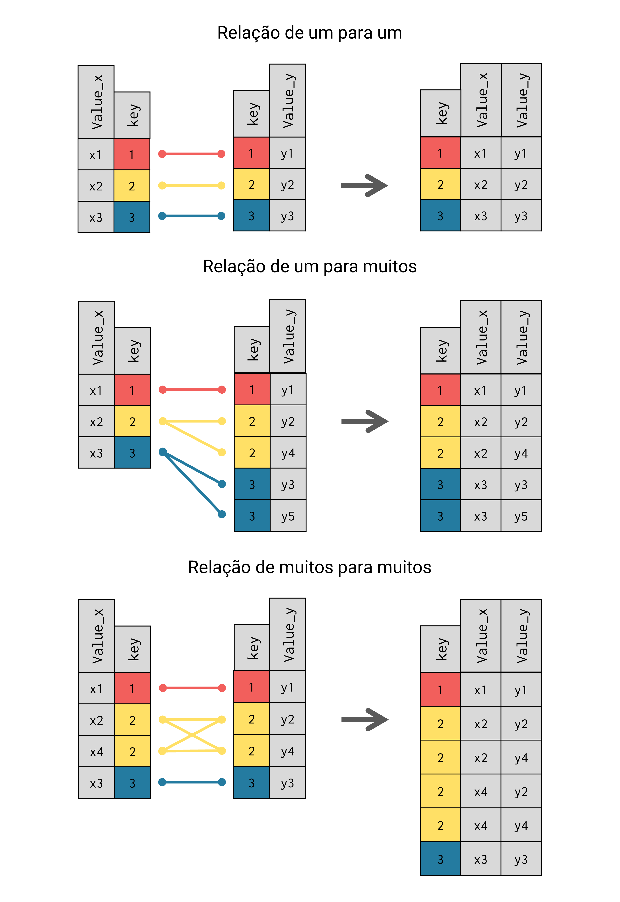

cores_de_pele ID Cor
1 100 Pardo
2 102 Branco
3 104 Branco
4 105 AmareloTake Blip
January 10, 2023
Quando estamos construindo uma nova tabela de dados, é muito comum compararmos os nossos resultados com tabelas anteriores e nos depararmos com problemas de divergência nos dados. Isto é, situações como:
Uhmm… a tabela antiga indica que o número de maquininhas vendidas no mês de Dezembro foi de 1387. Porém, esse mesmo indicador na tabela nova está em 1824 para o mesmo mês de Dezembro. Porque esse aumento?
Aumentos desse tipo podem ocorrer por uma variedade de razões. Porém, operações de JOIN tem sido uma razão específica que tenho enfrentado com muita frequência em meu trabalho. Em outras palavras, JOINs são fontes extremamente comums desse tipo de “efeito expansivo”, e, muitos analistas não compreendem o porquê, ou não enxergam como isso pode ocorrer.
Nesse post, busco justamente esclarecer como uma operação de JOIN pode causar esse “efeito de aumento” em seus dados. Eu explico esse efeito em detalhes no capítulo 6 do meu livro introdutório da linguagem R. Mais especificamente, a partir da seção Relações entre keys: primary keys são menos comuns do que você pensa. Portanto, grande parte do conhecimento exposto aqui são referências diretas ao livro.
Por opção minha, vou utilizar exemplos na linguagem R para demonstrar esse “efeito expansivo” de JOINs ao longo desse post. Mas você poderia facilmente transpor todos esses exemplos para qualquer outra linguagem de sua preferência (e.g. como o Python).
Ou seja, o conhecimento exposto aqui independe da linguagem utilizada. Pois o efeito expansivo descrito aqui é uma característica intrínseca ao processo de JOIN, e não da linguagem utilizada.
Para demonstrar esse efeito expansivo, vou utilizar as tabelas cores_de_pele e alturas como exemplo. Podemos visualizar os dados dessas duas tabelas abaixo:
DataRegistro ID Altura
1 2022-01-10 102 1.58
2 2022-01-10 105 1.72
3 2022-06-12 105 1.74
4 2022-08-24 105 1.75Vamos supor que, no início, você precisava manter um indicador de “número de usuários por cor de pele” em um relatório. Para isso, você simplesmente contava o número de linhas na tabela cores_de_pele agrupado pelos valores da coluna Cor. Como demonstrado abaixo:
library(dplyr)
usuarios_por_cor <- cores_de_pele |>
group_by(Cor) |>
summarise(N_usuarios = n())
usuarios_por_cor# A tibble: 3 × 2
Cor N_usuarios
<chr> <int>
1 Amarelo 1
2 Branco 2
3 Pardo 1Porém, uma nova necessidade surge no time. Agora, você precisa calcular também a “altura média por cor de pele”. Você sabe que as alturas dos usuários estão armazenadas na tabela alturas, contudo, você precisa trazer essas alturas para dentro da tabela cores_de_pele, para que você possa de fato calcular a altura média para cada cor de pele.
Portanto, você precisa realizar um JOIN entre essas tabelas, e é isso que estamos fazendo no código abaixo:
Agora, temos uma nova tabela chamada dados que contém todos os dados que precisamos para calcular ambos os indicadores (“número de usuários” e “altura média”) para cada cor de pele. Entretanto, quando calculamos esses indicadores com essa tabela dados, perceba que o número de usuários (indicador N_usuarios) de cor “Amarelo” sofreu um aumento repentino.
indicadores <- dados |>
group_by(Cor) |>
summarise(
N_usuarios = n(),
Altura_media = mean(Altura)
)
indicadores# A tibble: 3 × 3
Cor N_usuarios Altura_media
<chr> <int> <dbl>
1 Amarelo 3 1.74
2 Branco 2 NA
3 Pardo 1 NA Repare que nós não mudamos a fórmula de cálculo do indicador N_usuarios. Nós aplicamos a mesma função n() que utilizamos anteriormente. Nós também agrupamos a tabela dados pela coluna Cor com group_by(), da mesma forma que fizemos anteriormente. Porque esse aumento ocorreu?
Nós de fato não mudamos nada na fórmula de cálculo do indicador N_usuarios. Porém, nós introduzimos um novo item na cadeia de transformações da tabela. Mais especificamente, um LEFT JOIN realizado pela função left_join(). Ou seja, o JOIN é o que mudou nesse código, e ele é o culpado por esse estranho e repentino aumento no número de usuários de cor amarela.
Um processo de JOIN é a união entre duas tabelas. Ou seja, se você tem uma tabela A com colunas x e y, e uma tabela B com colunas j, k e l, um JOIN entre essas duas tabelas resulta em uma nova tabela com colunas x, y, j, k e l.
Uma característica fundamental de um JOIN, é que ele realiza um processo de pareamento dos dados durante essa união. Ou seja, um JOIN não vai simplesmente unir as colunas x, y, j, k, l e voa-lá! Temos uma nova tabela. Esse tipo de união que não inclui um processo de pareamento geralmente é denominado de “bind” ou “concatenate”, ao invés de “join”.
Para realizar esse processo de pareamento dos dados, um JOIN utiliza uma coluna (ou um conjunto de colunas) presente em ambas as tabelas como as “chaves” do JOIN. Portanto, as keys, ou as “chaves” de um JOIN são a combinação de colunas utilizadas para realizar o processo de pareamento (ou matching) entre os dados das duas tabelas que estão sendo unidas no JOIN.
Em Figure 1, podemos visualizar esse processo de pareamento dos dados. Nesse exemplo, a coluna que representa a “chave” do JOIN é a coluna ID, pois ela é a única coluna que está presente em ambas as tabelas.

As “chaves” (ou keys) de todo JOIN podem formar três tipos de relação: 1) um para um; 2) um para muitos; e 3) muitos para muitos. Em Figure 2 apresentamos cada uma dessas relações de forma visual, onde a coluna key representa a “chave” do JOIN.

Perceba que, para o caso de relação um para um, o número de linhas na tabela resultado permanece inalterado. Porém, as relações que realmente nos interessam nesse post são as relações de “um para muitos” e de “muitos para muitos”. Perceba que algum nível de “duplicação” de informações é gerado nesses dois tipos de relação.
É através dessa “duplicação” que pode ocorrer o que estamos chamando de “efeito expansivo” dos JOINs nesse post. Vale destacar que esse efeito independe do tipo de JOIN que você está realizando. Pois esse efeito expansivo nasce do processo de pareamento e da relação entre as “chaves” do JOIN, e não do tipo de JOIN (inner, left, right, full) que você está executando.
Perceba pelo exemplo acima, que em nenhum momento nós mudamos a forma como o indicador N_usuarios estava sendo calculado. Porém, o simples fato de introduzirmos um JOIN no caminho gerou uma expansão dos dados que distorceu os valores desse indicador.